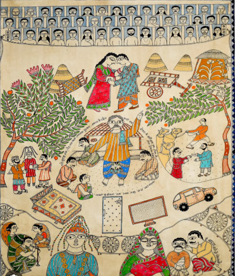
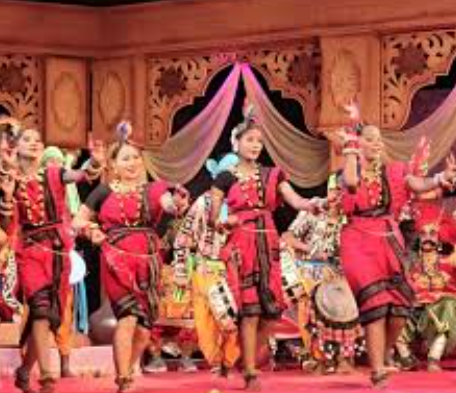

Mithila Painting

Maithili Language

Chhath Festival

Darbhanga is famous for its rich Mithila culture and traditions. The people of Darbhanga mainly speak Maithili language. The city is well known for Mithila paintings, traditional music, folk dance, and cultural festivals. Chhath Puja is one of the most important festivals celebrated here. People wear traditional dresses and celebrate festivals with great joy. Darbhanga is also famous for its hospitality, simple lifestyle, and cultural heritage. Mithila art and culture make Darbhanga unique and beautiful.

